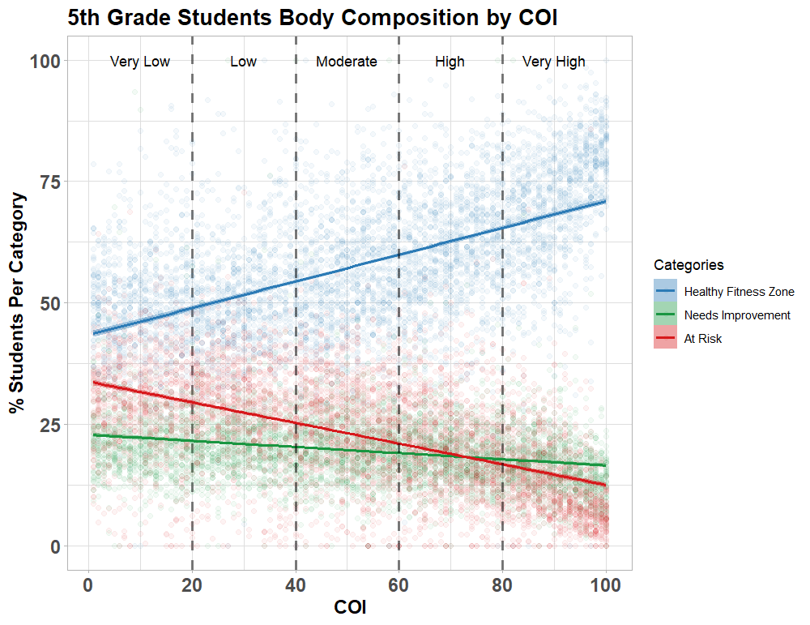
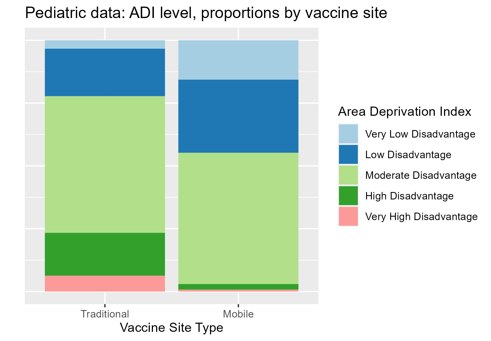
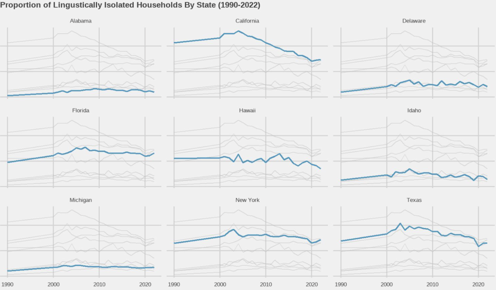
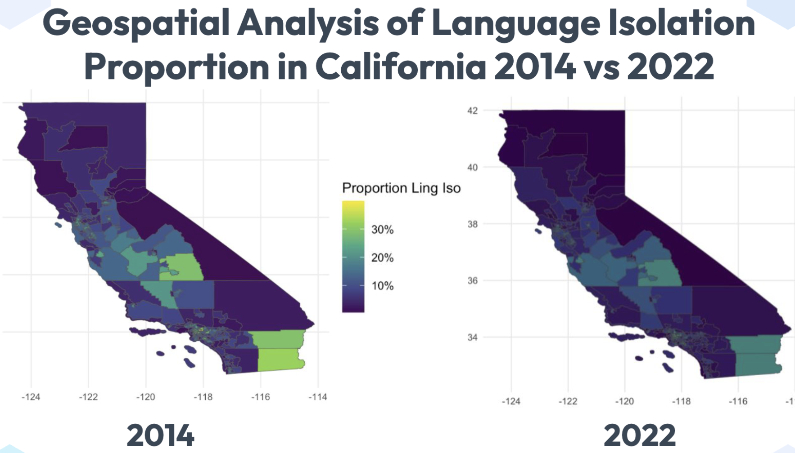
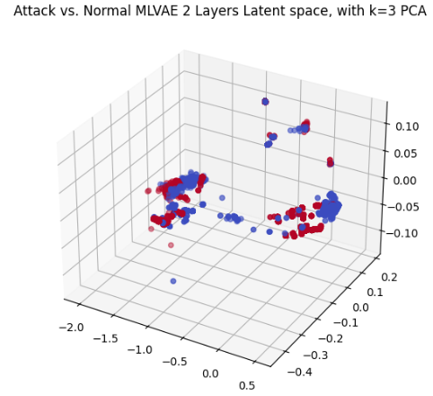
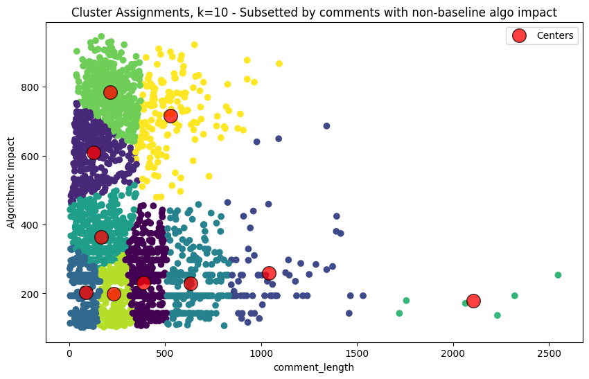

Sampler Portfolio
Thank you for visiting my portfolio; here’s a modest record of some of the work I’m both proud of & able to share.
Papers-in-Progress
Yiu A., Politewicz P., Salehi S., O’connell R., Chow E., Socioeconomic Deprivation and Opportunity’s Impact on Vaccine Decisions in Southern California (Pending submission, manuscript available on request)
Neighborhood Opportunity Associated with Physical Fitness in California Elementary Schools
Yiu A., Politewicz P., Guo Y., Cooper D. (Pending submission, manuscript available on request)
I analyzed the most recently available physical fitness data for California elementary and middle schools, investigating the relationships demonstrated between a schools’ geographic Childhood Opportunity Index and its students’ aerobic capacity and body composition. Mixed effects models and hierarchical Bayesian methods were both utilized, comparing and confirming our findings of improved outcomes alongside improved opportunity while controlling for correlation at the school and county level.

Socioeconomic Deprivation and Opportunity’s Impact on Vaccine Decisions in Southern California
Yiu A., Politewicz P., Salehi S., O’connell R., Chow E., (Pending submission, manuscript available on request)
I applied k-prototypes clustering and logistic regression to health records of vaccination decisions during the height of COVID. My research centered around mobile (drive-through) vaccine clinic deployment: who took advantage of these options, especially in Orange County, where they were established specifically to support communities in need? Findings aligned with intuitions surrounding many existing welfare programs. The people who took advantage of these clinics were not those most in need, but instead people of significant means at the upper bound of eligibility. This suggests that these clinics need to be administered with greater understanding of their audience, greater precision with their location, or greater communication regarding their presence.

Select Projects
SoCal RUG 2024 Data Science Hackathon, “Best Insight” Winner: Why Has Linguistic Isolation Improved So Markedly in California? [gh]
This hackathon challenged us to explore, extract, transform, model, and present on any data we found interesting from the University of Minnesota IPUMS database. The data engineering and ETL components of this work were nontrivial, given the size and schema used by IPUMS. We used Apache Arrow to perform our analysis on local machines - we were not given a cloud platform.
The statistic we wanted to explore was linguistic isolation, a per-household measure. A household is linguisitically isolated if no one above the age of 15 can speak English with conversational fluency. Out of all of the states, California’s linguistic isolation dropped most sharply over the time it was measured. Our team used a combination of comprehensive EDA and random forest modeling to intuit, and then confirm, that California’s progress in this regard came from first-gen immigrant children participating in the public school system, and turning 16 with satisfactory English fluency to represent their household. Further, we used random forests to test the utility of this measure in predicting some demographic measures of interest (household income), and found it ranked highly in feature importance.
 
California State University - Long Beach, Shark Lab: Data Engineering for Computer Vision
Worked alongside a colleague from my cohort to provide frameworks for utilizing computer vision in CSU-LB’s infamous Shark Lab. This effort was largely back-end, focused on the engineering, storage and management side, setting up a pipeline with Docker-deployed CVAT for undergraduate researchers to smoothly load in video and quickly apply computer vision tags. We then collect and pass the combined video and xml data to generate training data for YOLOv8 with some python scripting.
These methods are being used to streamline work and clear through a backlog of video attached to three different research interests: shark-swimmer/surfer distance modeling from drone video, baited remote underwater video (BRUV) object detection (predator/prey, or simply indicating which sections of video are worth manual review), and wave break patterning. Computer vision was sought as a supplement for work with BRUV video in particular because water in the Pacific is much more sandy and murky compared to most other contexts, making this a challenge even for subject matter experts.
[github to be shared upon manuscript draft completion]
UnVAEling Network Anomalies: Detecting Network Attacks with Variational Autoencoders [gh]
We borrow the known RT-IoT2022 dataset to test the utility of variational autoencoders for developing a network traffic filter. Ever-more pertinent as IoT devices proliferate, network security with decidedly slim overhead - like a predetermined network traffic model - is an appealing goal. Autoencoders are used here as an exclusionary filter. That is, if a burst of network traffic does not match a pattern known to the VAE (demonstrates high reconstruction loss), it is discarded.
We add to the extensive literature on this topic by testing the utility of a ‘mixed-loss’ VAE, explicitly segregating the calculation of loss for categorical and continuous features from one another. We found gentle, yet significant, results - this is toy data, and these methods were already well-explored. This remained instructive coursework, nonetheless.

Social Media Comment Scoring: Attempting To Reverse-Engineer a Comment-scoring Algorithm [gh]
We borrow data from the UCI Machine Learning repository to perform text analysis on social media comments drawn from a recipe sharing website. Among the features was the algorithmic ‘best_score’ assigned to each comment, the primary driver of whether or not a comment would be displayed to a given user. We augmented the dataset with sentiment and objectivity analysis scores using VADER and TextBlob packages to try and answer: what should you write to get YOUR comment to the top of the pile?
It turns out, it seems to be far less about what you write, and more about when you write it, plus how snappy your comments are. Polarity and subjectivity were not helpful predictors for a best_score response; instead, interactions (of any sort - positive and negative votes were both significant) and brevity were the real ticket. Performance assessment was done using MLP feed-forward NN regression. This begs the question: what makes a comment irresistible to interact with?
